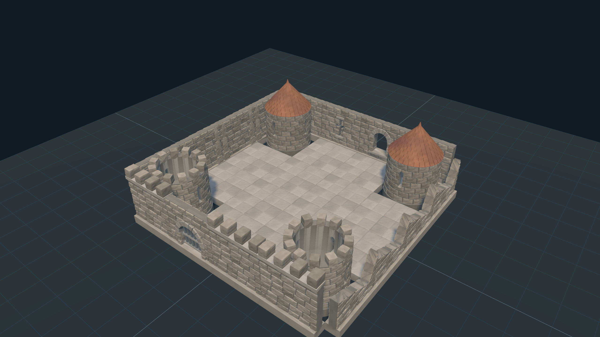
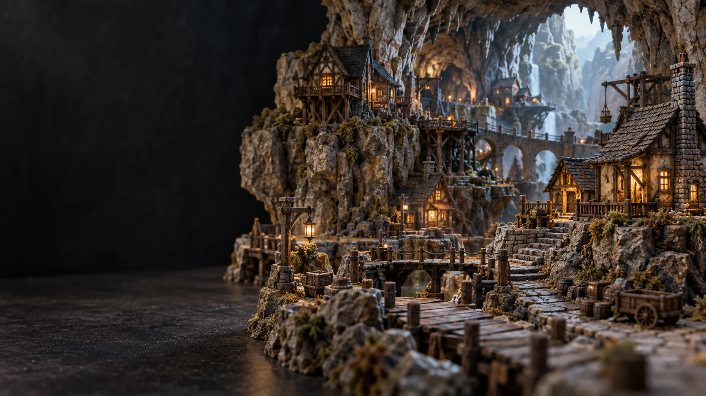
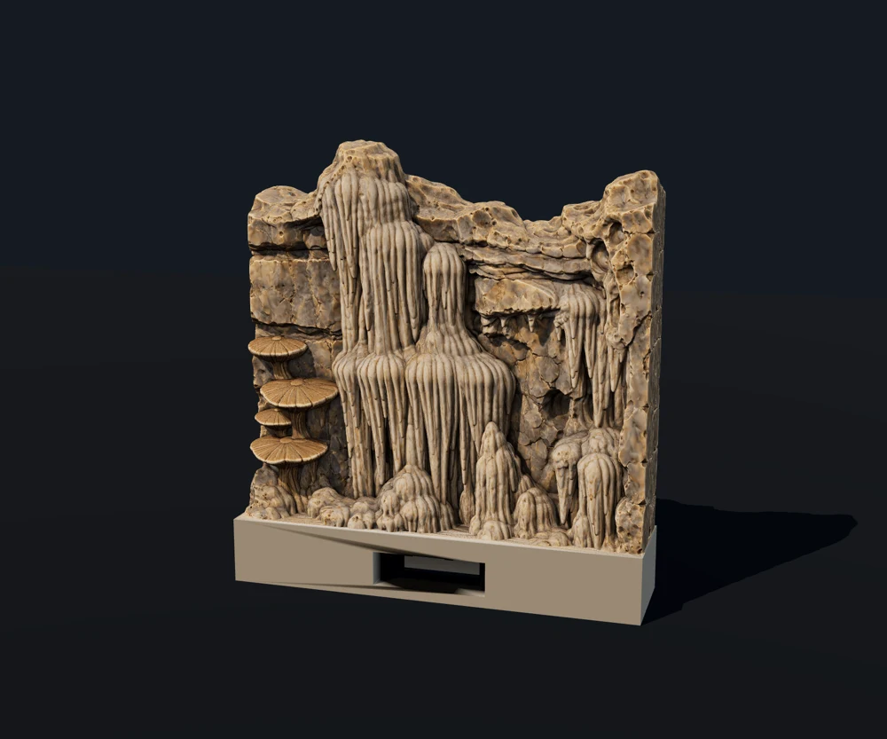
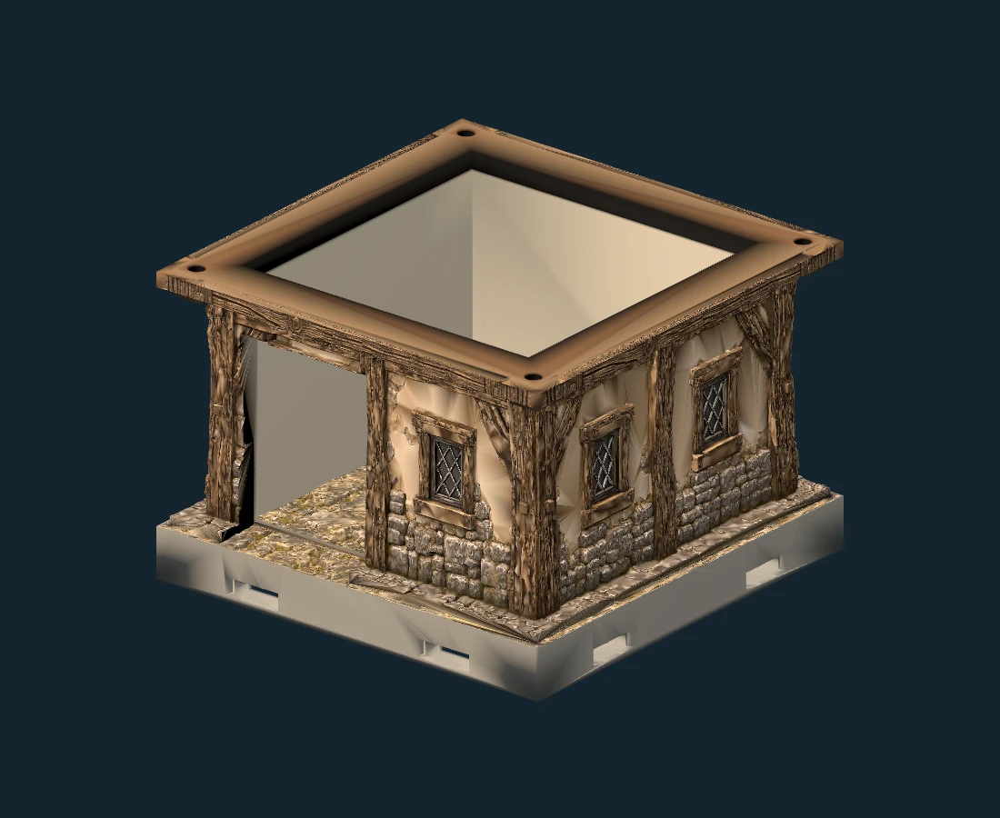
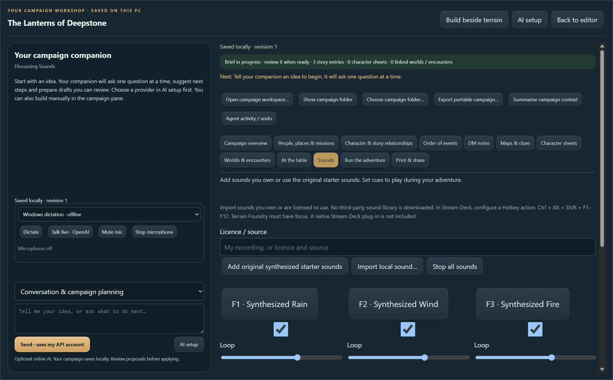
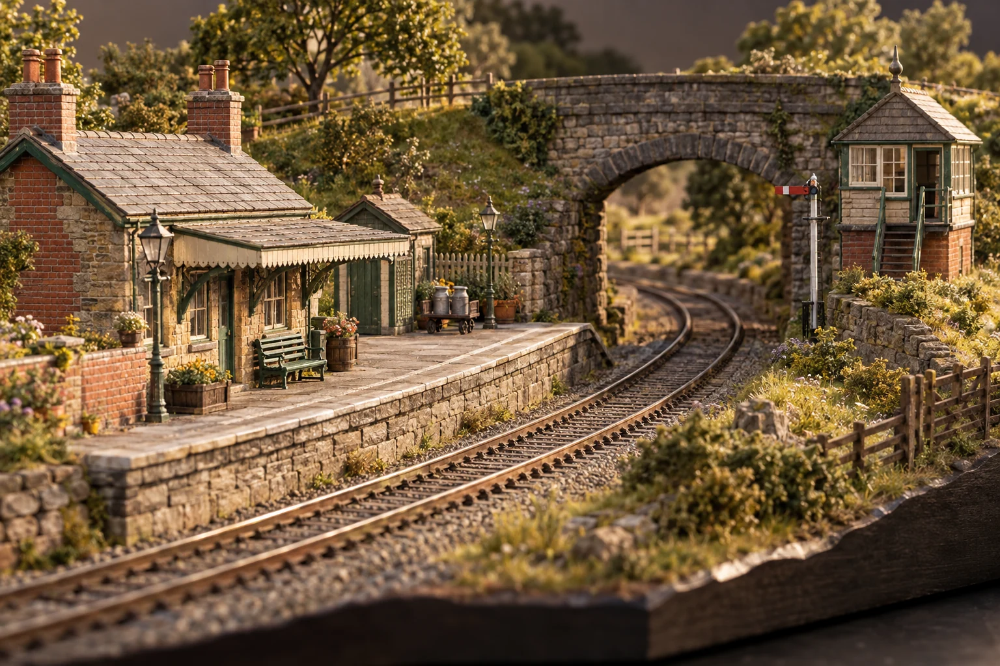
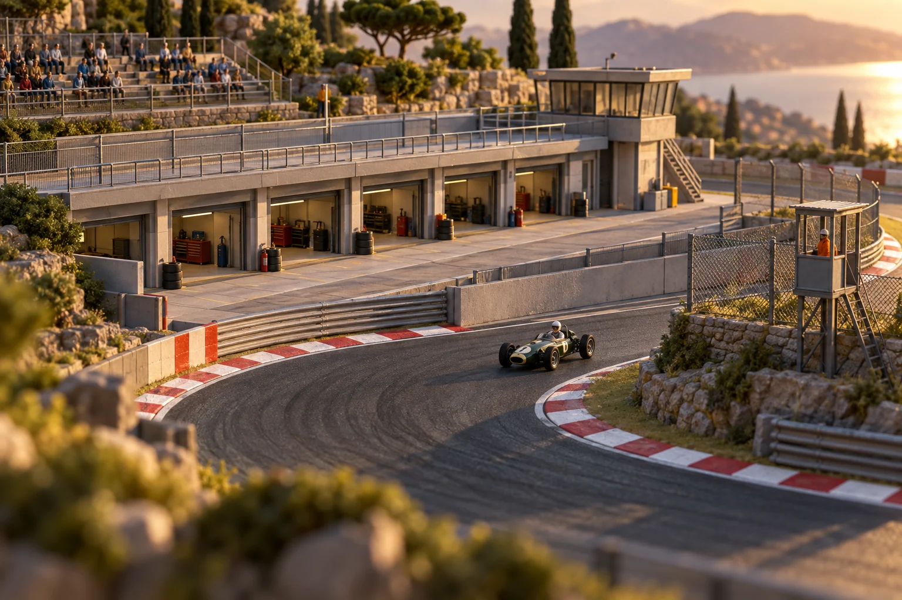

Free with the editorThe everyday essentials
Floors, walls, buildings and outdoor terrain. A flexible basic library for laying out your next encounter.
Free
Meet the editor →

FOR THE WORLDS YOU CAN’T WAIT TO BUILD
3D printable scenery. A free desktop world builder. A campaign workshop that stays on your PC.
Download for Windows ↗Free editor · Windows 10/11 · Free starter scenery
✓OFFLINE BY CHOICE · No signup. Your files.Concept artwork · explore the actual models below
SMALL PIECES. ENDLESS POSSIBILITIES.
Start with free scenery. Add a detailed village when you’re ready. Every image below shows an actual model or editor scene.

Free with the editorFloors, walls, buildings and outdoor terrain. A flexible basic library for laying out your next encounter.

Detailed starter collection50 detailed pieces: natural walls, grotto pools, stalagmites, secret doors and discoveries beneath the surface.

Premium collection85 village pieces, from timber buildings and separate roofs to market-square paving and local landmarks.
Actual models · click a piece to enlarge
YOUR DESKTOP IS THE WORKSHOP
Pick a piece, place it in 3D, and keep building. Save a room as an encounter, bring encounters into a world, and add height and layers to your tabletop.

FROM FIRST IDEA TO GAME NIGHT
Write the adventure, build its locations, and run it at the table. Your notes, encounters and sounds belong together.

PREPARE. PLAY. KEEP THE STORY GOING.
Optional online AI requires your own OpenAI API key and separately billed usage. Manual campaign editing and local sounds work offline.
Explore the campaign builder →BEYOND THE DUNGEON
More places to build are on the drawing board. These are collection concepts, not currently downloadable packs.

COLLECTION CONCEPT · IN DEVELOPMENT
Stations, bridges, platforms and scenery for model railway layouts.

COLLECTION CONCEPT · IN DEVELOPMENT
Pit buildings, barriers and trackside details for model racing circuits.
OFFLINE BY CHOICE
Once the app and scenery are installed, build terrain, write campaigns, save worlds and encounters, play local sounds and export print files without an internet connection. No required account. No cloud campaign storage.
Go online only when you choose: downloads, updates, premium activation, optional AI or a print-service request.
How it all works →